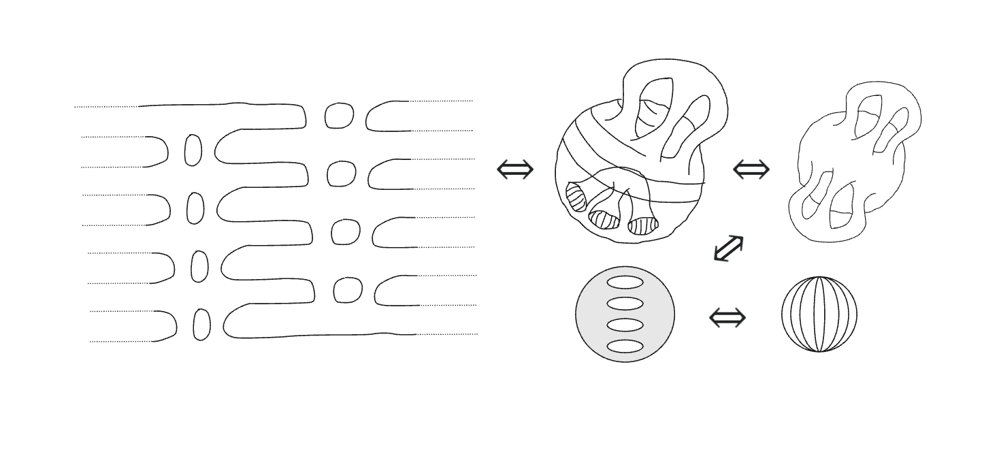

Topology studies the invariant properties of geometry under continuous deformation. An intuitive visual introduction is to imagine a surface in 3d space being deformed, without the opening or closing of holes, without the tearing apart or gluing together of parts of the surface, and without deforming the surface through itself. These invariants are referred to as topological properties. If a continuous deformation exists from one topology to another whilst maintaining these invariants, the topologies are said to be homeomorphic.

Take as an example a set of spheres connected both internally and externally by a set of tunnels. We can imagine poking a hole in each sphere to then unfurl them as sheets connected by these tunnel-structures. A set of internally connected tunnels can be pried apart into individual holes within the sphere, which can be extruded away from the surface as a pipe, then collapsed to a ring, to form a handle atop the sphere. We can collapse the sphere and re-arrange its handles to form a symmetric spherical structure, like the meridian lines of a globe.